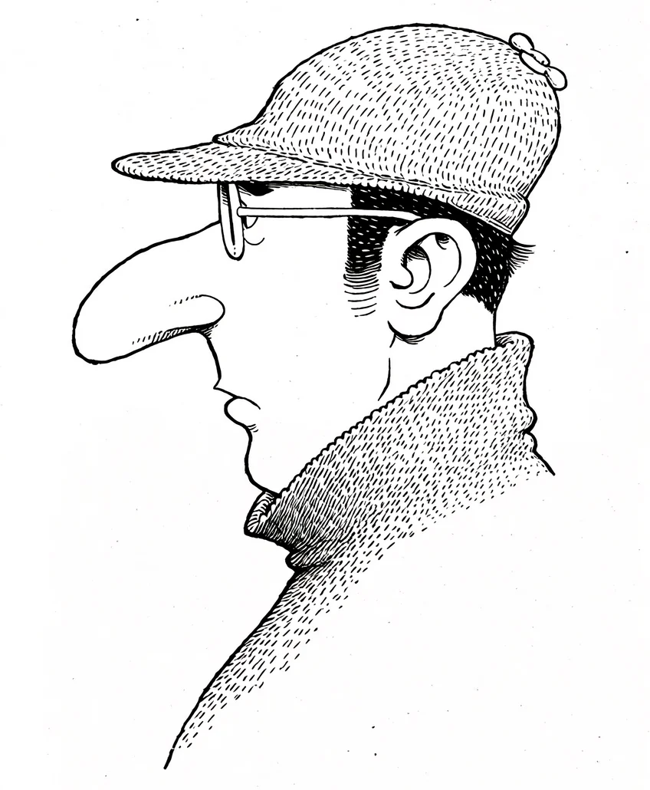

박 씨는 숨을 참았습니다. 배를 쑥 집어넣고 다리를 딱 붙였습니다. 얇은 자작나무 뒤였지만, 박 씨는 자신이 보이지 않는다고 믿었습니다. 그는 숨바꼭질의 천재니까요.
[Mr. Park held his breath. He sucked in his belly and snapped his legs together. He was behind a thin birch tree, but Mr. Park believed he was invisible. After all, he was a hide-and-seek genius.]
“아무도 나를 못 찾을 거야.”
[”No one will find me.”]
하지만 큰 문제가 있었습니다. 바로 그의 코였습니다. 박 씨의 코는 아주 길고 뾰족했습니다. 나무 옆으로 쑥 나온 코는 꼭 나뭇가지처럼 보였습니다.
[But there was a big problem. It was his nose. Mr. Park’s nose was very long and pointed. The nose sticking out from the side of the tree looked exactly like a branch.]
지나가던 강아지가 멈춰 서서 킁킁거렸습니다. “멍멍!” 강아지가 이상한 나뭇가지를 보고 짖었습니다.
[A passing dog stopped and sniffed. “Woof woof!” The dog barked at the strange branch.]
아이들이 손을 가리키며 깔깔 웃었습니다. “와! 저 나무는 콧구멍이 두 개나 있어!”
[Children pointed and giggled. “Wow! That tree has two nostrils!”]
박 씨는 눈을 꼭 감았습니다. ‘나는 나무다. 나는 그림자다. 아무도 나를 모른다.’ 그는 주문을 외웠습니다.
[Mr. Park closed his eyes tight. ‘I am a tree. I am a shadow. No one knows me.’ He chanted the spell.]
그때, 참새 한 마리가 날아왔습니다. 참새는 쉴 곳을 찾다가 박 씨의 코 위에 사뿐히 앉았습니다. 참새의 발톱이 박 씨의 콧등을 간질였습니다.
[Just then, a sparrow flew in. Searching for a place to rest, it landed lightly on Mr. Park’s nose. The sparrow’s claws tickled the bridge of his nose.]
박 씨의 코가 실룩거렸습니다. 도저히 참을 수 없었습니다.
[Mr. Park’s nose twitched. He couldn’t stand it at all.]
“에취!”
[”Achoo!”]
박 씨가 나무 뒤에서 튀어나왔습니다. 참새는 깜짝 놀라 날아갔습니다. 박 씨는 코를 비비며 억울한 표정을 지었습니다.
[Mr. Park popped out from behind the tree. The sparrow flew away in surprise. Mr. Park rubbed his nose, looking indignant.]
“참새 때문에 들킨 거야. 내 코 때문이 아니라고!”
[”I was caught because of the sparrow. It wasn’t because of my nose!”]